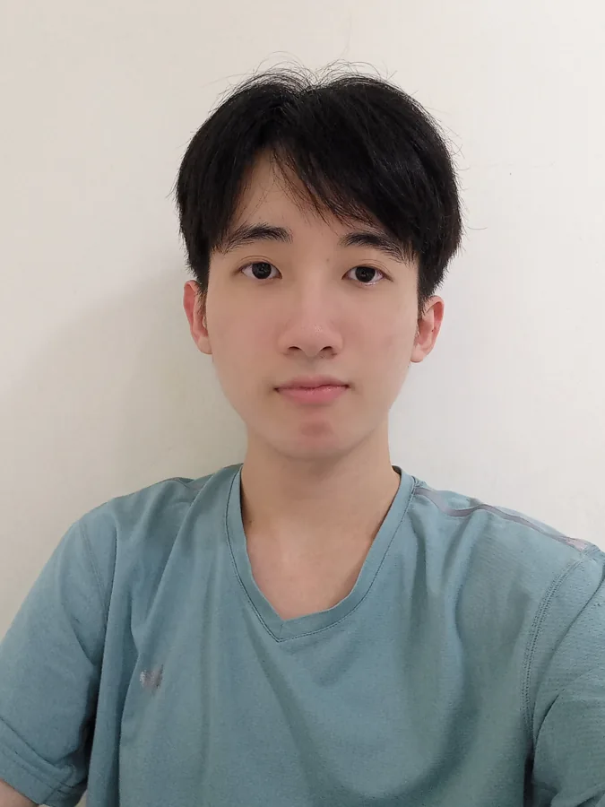

閱讀模式：以直式排版呈現所有書頁，不播放翻頁動畫。
A LITTLE CODE. A LITTLE LIFE. A BOOK BY ROGER.
KEEP IN TOUCH故事未完
THE NEXT CHAPTER
把故事，
接著寫下去。
有個想法，或想一起做點什麼？
歡迎寫信，聊聊你的下一個小計畫。
Roger.
TO BE CONTINUED8
PROJECT / 02對話的溫度
A VOICE COMPANION
諾斯菲Nosfy
用文字交換想法，
也用聲音讓對話自然發生。
一個能放進日常的 AI 對話空間。
- 文字聊天與語音對話
- 持續聆聽，也能隨時打斷
- 讓每段對話留下紀錄
這是私人空間，進入時需要存取碼。
開啟諾斯菲VOICE / TEXT / AI6
SMALL THINGS MATTER日常收集
A COLLECTION OF EVERYDAY LIFE7
PROJECT / 01好奇心的航線
AN ISLAND OF QUESTIONS
萬問島Stay curious.
把「為什麼」，變成一場冒險。
挑選科目、挑戰問答，
在每一題的解說裡發現新知。
- 單人闖關，走出自己的航線
- 與朋友連線，來場知識 PK
- 答題之外，讀懂背後的原因
EXPLORE / PLAY / LEARN4
A SPACE FOR CONVERSATION諾斯菲
一來一往，
讓想法有了回聲。THOUGHTS FIND THEIR VOICE.
NOSFY / VOICE & TEXT5
HELLO, WORLD.從這裡開始

你好，我是 Roger。A FEW WORDS BEFORE WE BEGIN
把好奇心，
寫成日常。
我是 Roger，喜歡程式設計、AI 與數據分析。這本小書收錄我的專案與生活：從一個問題出發，把想法慢慢做出來。
CONTENTS2
AN ISLAND OF QUESTIONS萬問島
每一個為什麼，
都是一座新島嶼。FOLLOW YOUR CURIOSITY.
WANWEN ISLAND3
HYDESTORY / PERSONAL EDITION
寫程式。
也寫生活。
一本關於好奇心、實作，
和那些值得留下的小事的書。
RogerVOL. 01 / 2026
THE PERSON BEHIND THE PAGES你好，Roger
持續學習，持續實作。
Always a work in progress.
A LITTLE ABOUT ME1